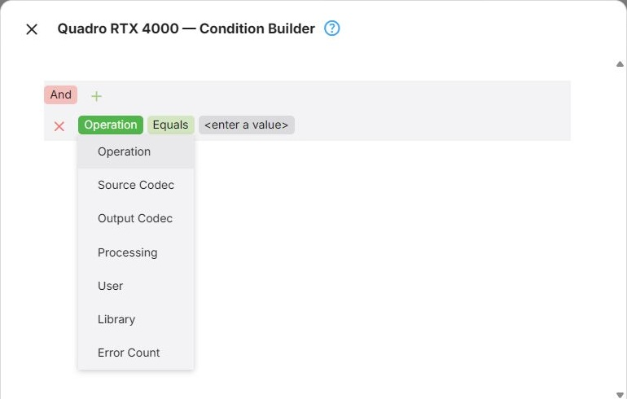
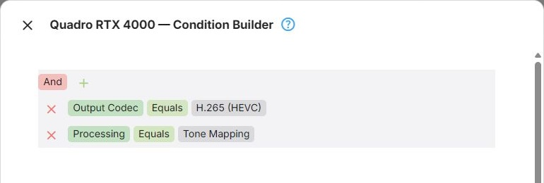
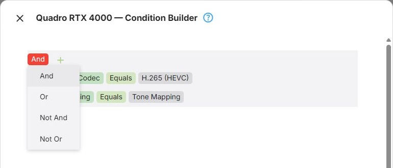

Node Conditions
Every node in the graph can carry conditions, which decide whether that node applies to the operation being evaluated. A node whose conditions do not match is passed over, and evaluation carries on as if it were not there.
Expert Mode shows a filter builder here, in place of the short list of operation kinds that Advanced Mode offers. The filter builder can combine several fields, with and/or groups, rather than only saying which kinds of operation a node applies to.
Conditions apply to containers as well as to device nodes. A condition on a Condition Group applies to everything inside it - which is the entire purpose of that container, see Node Types. Nodes inside the container can carry their own conditions on top.
Available Fields
| Field | What it matches |
|---|---|
| Operation | The kind of operation: Conversions, LiveTV, Playback, HlsPlayback, LiveStream |
| Source Codec | The video codec of the source |
| Output Codec | The video codec being produced - AV1, H.264 or HEVC |
| Processing | A processing step the operation involves: Closed Captions, Tone Mapping, Subtitle Burn-In, Subtitle Overlay |
| User | The user the playback or conversion belongs to |
| Library | The library the item comes from |
| Error Count | How many failed attempts precede this node being used - see below |
An operation can involve more than one processing step at once - tone mapping and subtitle burn-in together, for instance. Processing Equals Tone Mapping matches whenever tone mapping is needed, even when other steps are needed too. Processing Does not equal Tone Mapping matches only when tone mapping is absent.
To require both tone mapping and subtitle burn-in, combine their Equals conditions in an And group. Processing conditions can be nested and combined with other fields just like any other condition. When an operation has no processing steps, Equals and Is any of do not match any step; Does not equal and Is none of match because the selected steps are absent.

Building a Condition
The Conditions command on a node opens the Condition Builder. A condition compares one field with a value - for example Output Codec Equals AV1. Conditions are collected in groups, and groups can be nested inside each other, so there is no limit to how many conditions a node can have or how they are combined.
The builder starts out with a single, empty group.
Adding and Removing Conditions
- Click + next to a group and choose Add Condition.
- Click the field name of the new condition and pick the field to match on - see Available Fields.
- Click the operation and pick how the field is compared - see Operations.
- Click the value and enter what the field is compared with. Fields with a fixed set of values - the operation kinds, codecs, processing steps, users and libraries - offer them in a list.
To remove a condition, or a group with everything in it, click the × button in front of it.

Operations
Which operations the builder offers depends on the type of the field:
| Field | Operations |
|---|---|
| Operation, Source Codec, Output Codec, Processing, User, Library | Equals, Does not equal, Is any of, Is none of |
| Error Count | Equals, Does not equal, Is greater than, Is greater than or equal to, Is less than, Is less than or equal to, Is between |
Is any of and Is none of take several values at once: Output Codec Is any of H.264, HEVC means the same as two Equals conditions in an Or group. Is between takes two values and includes both of them.
Groups
A group combines its conditions with one logical operator, shown at the top of the group. Click it to choose another:
| Operator | The group matches when |
|---|---|
| And | all of its conditions match |
| Or | at least one of its conditions matches |
| Not And | not all of its conditions match |
| Not Or | none of its conditions match |

Conditions are combined with and or or, but not both within one group. To express a mixture, nest a group inside another with + and Add Group: the inner group counts as a single condition of the outer one, and its own operator is independent of the outer one's.
For example, to have a node handle AV1 output for one library, and anything a particular user plays:
Or
├── And
│ ├── Output Codec Equals AV1
│ └── Library Equals Movies
└── User Equals Alice
Written out, that is (Output Codec Equals AV1 And Library Equals Movies) Or User Equals Alice.
Save the dialog to update the node in the graph, then save the configuration to make the conditions take effect - see Saving.
Conditions on Fallback and Failure Points
Conditions on nodes that take part in fallback calculation are evaluated in the second pass just as they are in the first - see Fallback Paths.
What makes the two passes distinguishable from inside a condition is Error Count: the number of failed attempts that precede this node being used.
- During the first pass nothing has failed yet, so it is 0
- During the second pass it starts at 1 and increases by one for each fallback point already found and added to the list - so the first fallback is evaluated with 1, the second with 2, the third with 3
That gives you a way to state when a node applies at all:
| Condition | Effect |
|---|---|
Error Count = 0 |
Effectively disables the node for fallback use - the equivalent of not marking it as a fallback point |
Error Count > 0 |
Applies only as a fallback, never during initial selection |
Error Count = 1 |
Applies only as a fallback when no previous fallback attempt has been made |
The most common use is on a Failure Point. By default a Failure Point applies in both passes, which stops
evaluation outright. Giving it Error Count > 0 leaves the first attempt alone while stopping any further
ones - "try this, but do not keep trying if it fails" - see
Failure Point.
The same applies to a device node marked as a fallback point: a condition on Error Count decides whether that node is used as a fallback at all, and whether only as the first one.